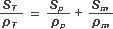
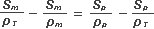

NO ME SALEN
(APUNTES TEORICOS Y EJERCICIOS DE BIOFÍSICA DEL CBC)
ELECTRICIDAD
|
|

|
| |
 |
30) Una membrana de 10-8 m de espesor contiene poros de 10 ohm cm de resistividad. La
resistividad del material de la membrana es 1014 ohm cm. Sabiendo que la resistividad total
de la membrana es 109 ohm cm, estime la relación entre el área de los poros y el área del
material de la membrana. Ayuda: Recuerde que entre el interior y el exterior de la
membrana celular hay una diferencia de potencial (problema 11). Si llama Rt a la
resistencia eléctrica total de la membrana, Rm a la del material que la constituye y Rp a la
de los poros, ¿cuál sería el circuito eléctrico que propondría para modelizar este problema? |
|
| |
| Acá tenés un lindo problema, sobre todo por su conexión con la biología. Pero tiene un pequeño defecto que es que, como está planteado, tiene un 10 por ciento de física y un 90 por ciento de álgebra. No importa, vamos a tratar de explotar al máximo nuestro 10 por ciento y vas a ver que bien vale la pena. |
|
 |
| |
 |
Lo primero que tenemos que hacer es cerciorarnos de que entiendas bien (pero bien, bien) de qué nos está hablando el enunciado, qué son las superficies de las que nos pide su relación y qué puede tener que ver eso con la resistencia. Acá te hice un esquemita de un cachito de membrana que voy a utilizar para aclarar ese asunto previo.
Suponete que ese cachito de membrana que corté tiene una superficie de 100 mm² (es ridículo, pero sólo a los efectos de entender la pregunta). A esos 100 mm² los vamos a llamar superficie total, ST. Ahora fijate que ese cachito de membrana tiene 6,5 poros y ponele que cada poro tiene un área de 4 mm²; de modo que tenemos una superficie total de poros de (6,5 x 4) 26 mm²: a esa superficie "hueca" la llaman área de poros, Sp.
Lo que queda en la membrana -que no es poro- es el material de la membrana (o sea, los fosfolípidos, ¿cierto?), que en nuestro ejemplo imaginario tendría una superficie de (100 – 26) 74 mm². Se trata del área de material de membrana, Sm.
¿Te quedó claro ahora? Bien, de esto vamos a usar:
ST = Sp + Sm
|
|
|
Y lo que nos piden hallar es la relación entre el área de los poros y el área del
material de la membrana, o sea: Sp / Sm . Manos a la obra.
Según este modelo de membrana, una carga que quiera pasar de un lado a otro sólo puede optar por dos caminos: o pasa por un poro, o atraviesa el material de la membrana. Esta descripción coincide exactamente con la definición de paralelo: tanto la resistencia que ofrece atravesar poros como la que ofrece atravesar fosfolípidos, son resistencias en paralelo. |
|
 |
Este esquema es la respuesta a la última pregunta del enunciado, y acá se ve que la resistencia total de la membrana es la resistencia equivalente del paralelo entre la resistencia de los poros y la del material.

De todos modos no tenemos los valores de las resistencias sino los de las resistividades, ρ. De modo que escribiremos las resistencias en función de las resistividades R = ρ l / S, donde l es el largo de la resistencia (en nuestro caso el espesor de la membrana, e), y S es la sección de la resistencia (en nuestro caso las áreas implicadas en cada una).

|
|
|
A partir de acá comienza el 90 por ciento de álgebra. Por supuesto que te lo voy a hacer, pero tratá de seguirlo conmigo así practicás. Además todavía falta, al final, un par de broches para nuestro 10 por ciento de física.
El espesor, e, se puede cancelar ya que divide en todos los términos de ambos miembros; y lo que divide en el denominador se puede pasar multiplicando al numerador:

Ahora usamos la relación entre superficies a la que arribamos con el ejemplo hipotético de la membrana: ST = Sp + Sm:

Reordenamos para separar las áreas:

Pasemos esos denominadores al numerador:
Sm ρT-1 – Sm ρm-1 = Sp ρp-1 – Sp ρT-1
En cada miembro tomamos el área como factor común:
Sm (ρT-1 – ρm-1) = Sp (ρp-1 – ρT-1)
Las unidades respectivas de esos parénteses se van a cancelar, no nos preocupemos por eso. Todas esas resistividades son datos del enunciado:
ρp = 101, ρm = 1014, ρT = 109
Por lo tanto, sus inversas valdrán:
ρp-1 = 10-1, ρm-1 = 10-14, ρT-1 = 10-9
Metemos esos valores en la última ecuación y hacemos las cuentitas:
Sm (10-9 – 10-14) = Sp (10-1 – 10-9)
Si querés podés hacer las cuentas con la calculadora (pero tratá de que nadie te vea... porque vas a pasar vergüenza: las cuentas son tan sencillas que hay que hacerlas mentalmente... si no me creés, mirá la NOTA ALGEBRAICA de abajo).
Sm . 10-9 = Sp . 10-1
Despejamos el cociente que estamos buscando: |
|
|
|
Discusión: ¿entendés lo que te dice ese número? ¡Que los poros están representados MUY minoritariamente: apenas la cien millonésima parte del área de la membrana! ¿Y eso qué querrá decir... que las células tienen poco poros? ¡¡¡Noooo!!! Poros hay muchísimos, pero son muy pequeños. No te olvides que la estructura del poro está diseñada para dejar pasar de a un ión a la vez. O sea: tienen el diámetro interno de un átomo. |
|
NOTA ALGEBRAICA: para empezar, tenés que recordar que si preferís trabajar sin fracciones podés hacer estos reemplazos sencillos:
1/10 = 10-1, 1/109 = 10-9 y 1/1014 = 10-14. O sea: 1/10n = 10-n
Ahora fijate que si a 10-1 le restás 10-9 el resultado es 10-1. Y si no me creés hacelo con la calculadora... ¡pero redondeá! ¡No uses 34 decimales porque se van a reír de vos!
Lo mismo pasa si a 10-9 le restás 10-14: el resultado es 10-9.
Finalmente, si querés dividir 10-9 por 10-1 alcanza con restar los exponentes... pero dale... hacelo con la calculadora... total, las pilas las garpa tu viejo. |
|
|
| Desafío: Las mediciones de resistencias se realizan modificando las soluciones a uno y otro lado de la membrana y fijando la diferencia de potencial con una batería... de ese modo podemos medir las corrientes de cada tipo de ión y -por lo tanto- la resistividad de cada tipo de poro o canal. ¿Se tratará de pasajes activos o pasivos? |
|
| |
|
| Prohibida la reproducción total o parcial de este material didáctico extraordinario por cualquier medio visual, gráfico, sonoro u holográfico. Las transgresiones a esta disposición serán penalizadas con 32 clases de "El ello y el superyo en la formación de la personalidad neurótica" de Psicología Medieval.
Sólo se permite su reproducción citando la fuente. Algunos derechos reservados. Última actualización oct-07. Buenos Aires, Argentina. |
|
|
| | |
|
|